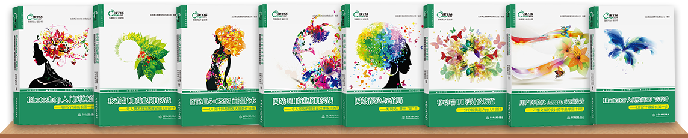

网页UI设计师
“如果你分享的东西，不是你亲自经历过，或者实践过的话，你的分享是很难打动别人和得到别人的认同。”本岗位课程，专门针对企业所需网页UI设计人才打造，带领学员与设计大牛并肩完成项目实践。分享最真实的案例和行业经验，才是最有价值的！
- PS
- AI
- 网站布局
- Web
- 电商
- 视觉
- HTML5
网页UI设计师
阶段一 网页UI设计篇
想要学好网页UI设计坚实的基础也是必不可少
的。本课程将学习：PS操作基础、色彩搭配技
巧、版本布局方法、AI基本操作内容
阶段二 网页UI项目篇
通过本课程将学习：营销型企业站、电商类网站、
店铺视觉营销、Landing Page（着陆页)优化、
游戏网站改版、企业OA界面的设计。
阶段三 网页UI开发篇
网页设计师必备扩展技能。本课程将学习：H5
页面的结构、高级标签，CSS样式设计、盒子模型
，网站的SEO优化等内容。

一、UI设计-PS基础
二、UI设计-AI基础
三、网页端UI视觉设计
1.色彩基础知识
2.网页配色应用
3.网页布局制作和应用
4.项目综合案例

一、网页UI商业项目实训
1. 网页UI项目管理规范
2. 营销型企业站设计
3. 电商类网站设计
4. 店铺视觉营销设计
5. Landing Page设计优化
6. 游戏类网站改版设计
7. 企业OA界面设计
8. 专题活动页视觉设计
9. 面试作品包装秘籍
二、网页UI项目考试
一、UI设计师必学H5+CSS技术
二、计算机基础-预科
三、网页开发基础
通过多个项目实战，全面学习目前热门的Web端主流应用设计，带你快速成为最抢手的互联网UI设计师。
同时，还有设计师技能提高，掌握HTML5、CSS3、JS、jQuery实现动态页面。
项目展示
网页配色、布局，电商，店铺，LP，游戏类，企业OA等多类型项目训练，学成即有大量作品

在课工场，不用担心学不会，电脑、手机端支持任意时间段的在线学习；在课工场，从最基础的电脑操作开始支持你成为技术大咖
全程串讲
就业服务
就业讲座

源自北大的教育品牌，18年教育品质沉淀
他们说，我是金牌讲师。只说对了一半。其实，我就是我！课工场教师，特立独行，坚持互联网教育梦想；
行业大咖，技术达人，跟你一起学习


课工场依托互联网平台，出版和在编几十种教材，形成了移动场景学习，资源数字化，二维码扫描可学的特色。

平台汇聚了数百位来自知名互联网企业的行业大咖，向互联网学习人群提供直播，录播，面授等多模式教学场景
遍布全国的线下服务中心提供成熟教学服务，形成完善的O2O“互联网+教育”解决方案。
课工场为学习者提供符合现代年轻人个性的学习平台,具有职场竞争力的课程,和覆盖全国的高品质O2O线下服务中心。
干净明亮的学习环境，学习更优雅